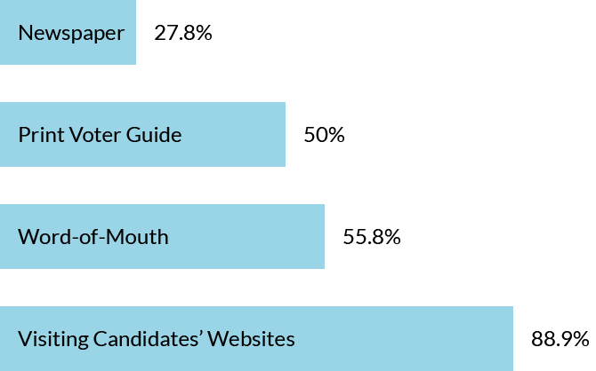
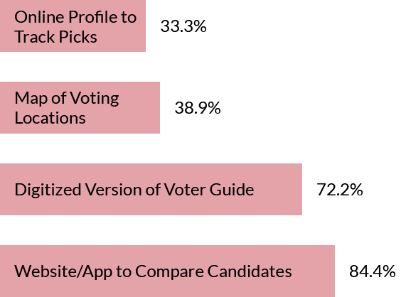

02
Research
Surveying U.S. Voters
I surveyed 29 U.S. citizens of voting age to hone in on the issue. 62.1% of respondents said they voted or were planning to vote in their state primary elections.
How do voters decide who & what to vote for?
What would help make voting in state primaries easier?
37.9% of users surveyed said they did not vote or were not planning to vote in their state primary elections. 27% of these non-voters were not registered to a political party, so would not generally be voting in state primary elections (unless there were non-partisan issues/initiatives on the primary ballot).

would be more likely to vote if there was a single app or website where they could research candidates in one place.
would be more likely to vote if there was a better digitized version of the Voter Guide.
Eyeing The Competition
In addition to surveying users, I took a look at what was already out there to help voters in elections. By examining the D.C. Board of Elections’ website/app, The Washington Post endorsements, and Rock the Vote, I started navigating the space for a state primary-focused app.
I created full SWOT analyses on all three competitors, but the key takeaways are summarized below.
Opportunities:
- Combining information from the Board of Elections with Media endorsements for one-stop-researching
- Crafting a recognizable brand like Rock the Vote that appeals to a younger audience for local/state elections
- Providing clear information on early voting locations, election day polling places, and voter registration
Obstacles:
- Establishing trust
- Gaining and maintaining accurate information
- Including the needed information while maintaining a clean, intuitive interface
Identifying The Users
Through my initial research, I identified three key demographics that I wanted to learn more about. I set up interviews with a representative from each group. From these interviews, I crafted user personas that I wanted to keep in mind throughout the design process.
The Older Voter: Donna, a 57-year old woman who is a consistent voter. She’s inspired to vote local, but doesn’t have a lot of time to research candidates on her own.
The Inspired Millennial: Abby, a 29-year-old woman who has always voted in the presidential election, but is just beginning to get into local and state politics.
The Traveler: Phil, a 32-year-old man who is constantly out of town, doesn’t tend to vote in state primaries, and doesn’t know much about politics in his area.